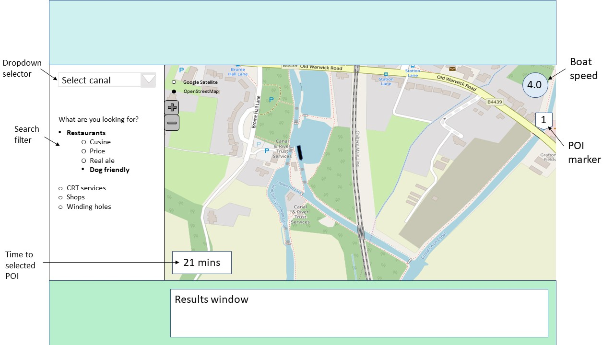

As the UK canal network is very large (Birmingham alone has more miles of waterways than Venice!) it was decided to use a small section of the canal network to provide a proof-of-concept with a view to scale up the webpage should it prove useful. The webmap currently uses client-side processing rather than PHP/AJAX servers. Details of the languages and plugins used is provided in the table below.
| Architecture | Functionality |
|---|---|
| HTML | Text components |
| Bespoke Javascript | Basic functionality |
| CSS | Interface styling |
| Leaflet.js javscript library | Basemaps, map styles, map functionality |
| Turf.js javscript library | Geoprocessing capabilities |
| Bootstrap javscript library | User interface functions |
| JQuery javscript library | File processing |
Two basemaps are provided, with the default being the OpenStreetMap and an optional Google Satellite Imagery.
As the data files are already 6mb for a small area of the UK, the client-side server architecture would be limited in its ability to deliver a usable webmap with data from the whole of the UK. It is expected that performance would suffer if a significantly larger data set was loaded and processed on the local device. A PHP/AJAX server would be more beneficial for future updates.The same client side processing could be performed but with a smaller dynamic set of data delivered from the server.
Open data was sourced from the UK Food Standards Agency (UKFSA) and the Canal and Rivers Trust (CRT). It was subsequently identified that although the UKFSA data on food premises was available as an open data source, some establishments were missing from the database. It was unclear why these establishments were missing, as on investigation they held an accredited food hygiene rating, so should have been listed. The decision was taken not to manually update the list with missing establishments as this would take a large amount of time away from developing the website itself and as the website is planned as a proof of concept, this was felt unnecessary. However, future improvements should include updating the list, either via user submissions, web scraping programmes, manual updates or investigation into alternative data sources.
Figure 1. ER diagram of Geoweb Data
The ER diagram above shows how the data are related. Should the webmap progress to a PHP based interface, the database will work on a similar premise to that shown.
Data pre-processing involved cropping the data to the Birmingham area to create a usable data set. The Birmingham canal network was used as it was judged large enough to be of interest to canal users but small enough to not require server-side logic in order to function well. Canal data is provided by CRT in 1km sections; it was was decided to retain the data in this format in order to simplify keeping this data updated and assist with potential future server-side processing. It is anticipated that slight performance gains may be realised by processing the geodata in smaller sections. The canals were presented to the end user grouped by name using client-side processing.
Data from the UKFSA was georeferenced using the location data provided in the tables (lat/long) and then cropped using ArcGIS to include only those establishments within 70m of the canal centreline, and within the Birmingham area. 70m was judged wide enough to allow for the changing widths of the canal and for establishments to be set back from the canal side to be included. An additional column produced from a spatial join in ArcGIS tagged each pub/restaurant with the closest canal so that this could then be easily searched. The CRT data and UKFSA was then converted into the geoJSON format through a 2-step process (via KMZ as ArcGIS has difficulties producing valid GeoJSON) so that it could be read by Leaflet.
Subsequent analysis showed that the lat/long information in the dataset was derived from the postcode. The usage of postcodes to geolocate the data proved problematic with points not always being accurately located. This led to some pubs, being errantly removed from the spatial selection. A fix for this was investigated using full address to geolocate the premises but these services were found to be limited to the number of free searches per day and did not repeatedly return data that was more accurate and so was not utilised. The number of POI in the dataset was gauged to be large enough to provide an indication for how well the application would work and to demonstrate functionality.
Figure 2. Wireframe diagram of envisaged interface.
The submitted interface differs from the wireframe shown above in that there is no calculation of cruising time to the POI and that the point markers do not display the number that the POI occurs in the results table. The sidebar navigation also only shows restaurants, rather than CRT facilities and shops.